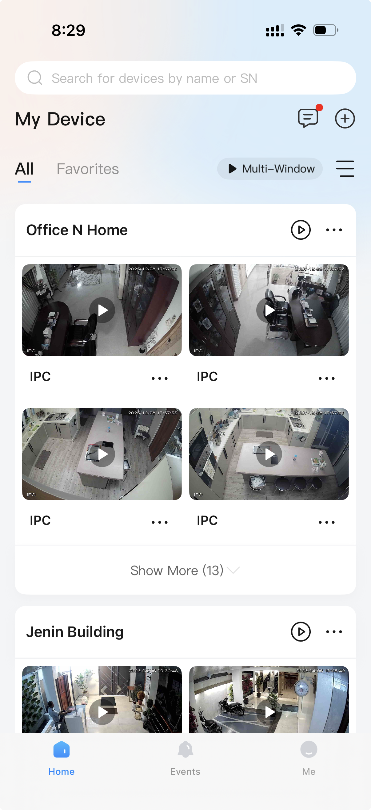
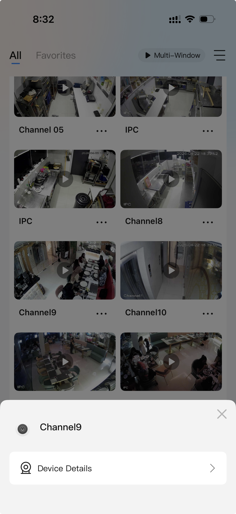
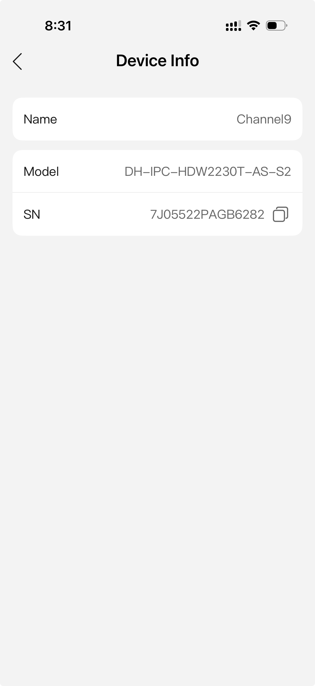
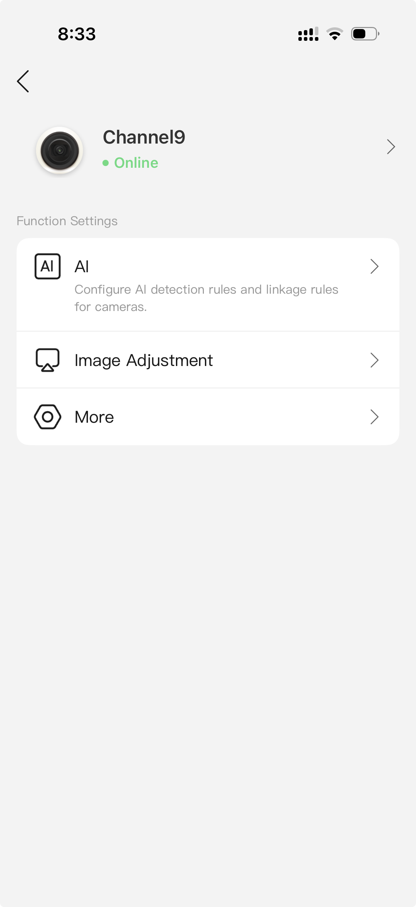
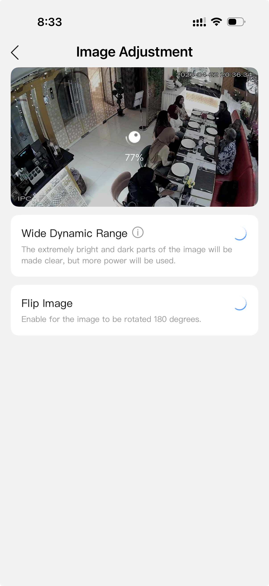
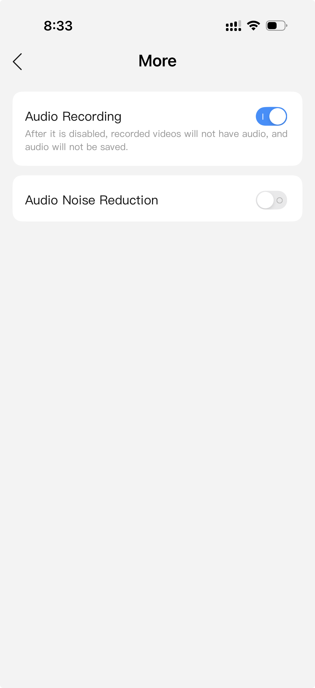
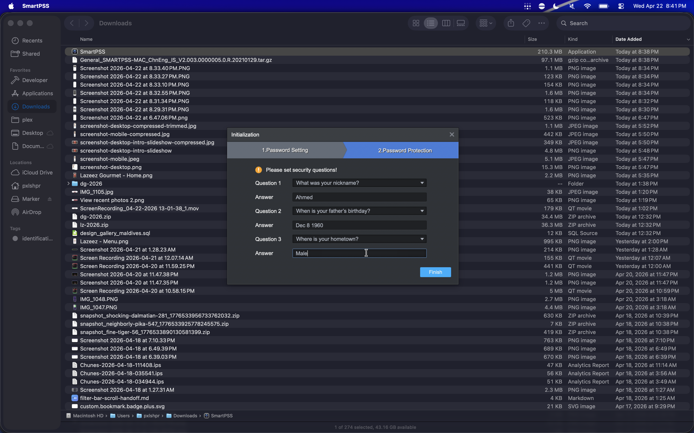
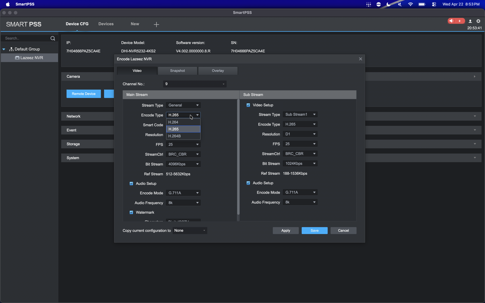
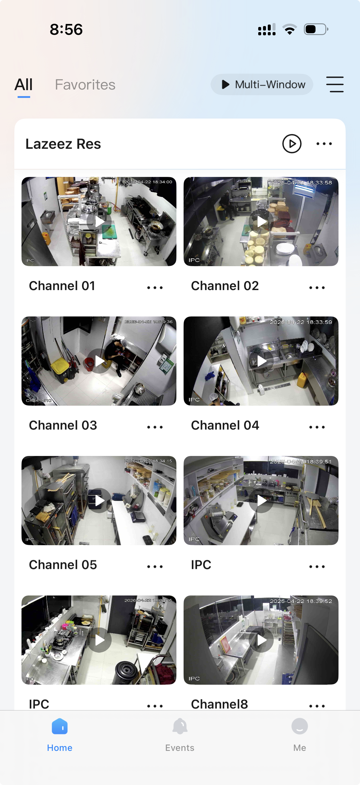
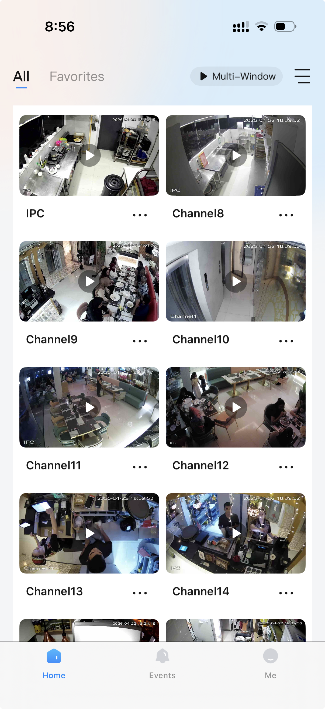

Home / CCTV Notes
How we diagnosed and fixed Channel 9 streaming slow/choppy in the DMSS iPhone app, what each setting does, and the final recommended configuration. Includes the actual screenshots taken during the session.
The slow camera (Channel 9) was set to 4096 Kbps while a smooth camera on the same NVR ran fine at 2048 Kbps. The camera's link to the NVR couldn't sustain 4 Mbps cleanly. We dropped Channel 9's bitrate to match the smooth camera (2048 Kbps main / 512 Kbps sub) and that made it watchable. The codec swap (H.265 → H.264) we tried first was a red herring — bitrate, not codec, was the bottleneck.
Where to make the change: you can't do it in DMSS for cameras behind an NVR — use SmartPSS on a Mac/PC → add the NVR by SN (P2P) → Device CFG → Encode → Channel 9. Full walkthrough below.
On this setup all cameras are IP cameras wired (PoE) into a single NVR (Network Video Recorder — the box that records footage, powers the cameras over Ethernet, and streams everything to the DMSS app). DMSS connects to the NVR, and the NVR relays each camera.
Common reasons one feed is choppy while others are real-time:
In DMSS, the home screen lists device groups. The restaurant's NVR appears as "Lazeez Res" (also visible under another saved group earlier in the session as "Office N Home" — same physical NVR). Tapping a tile's ⋯ → Device Details shows that camera's model and serial.



For cameras connected behind an NVR, DMSS strips out the encode settings. The per-camera ⋯ → Device Details screen only exposes AI, Image Adjustment (just WDR + Flip), and More (Audio Recording + Audio Noise Reduction). There is no codec / bitrate / frame-rate control here.



So: to change encode settings you go in through the NVR — easiest from a laptop using SmartPSS.
SmartPSS is Dahua's desktop client (Windows/macOS). It can connect to the NVR over the same P2P link DMSS uses — no LAN access, no port forwarding, works from anywhere with internet.
General_SMARTPSS-MAC … V2.003 … 20210129.tar.gz (still the current Mac version). It's unsigned, so macOS Gatekeeper blocks it. Clear the quarantine flag once:
xattr -dr com.apple.quarantine ~/Downloads/SmartPSS.appRe-run that if a future macOS update re-quarantines it. (A copy of the app is kept — see §10.)
First launch: SmartPSS asks you to create a local app password (just for this client — not your Dahua account) and set security questions.

Go to Devices → Add. Set Method to add = SN (For Device Support P2P).
Fill in:
Lazeez NVR7H04666PAZ5CA4E use the NVR's SN — not a camera SN like 7J05522…, which only gives you that one cameraadmin«NVR device password» (the device password, not the SmartPSS app password — see §10. Omitted from this public copy — in the private notes.)Save. Status should flip to Online within ~10 s, and all 32 channels appear.
Click the gear / "Device CFG" icon on the NVR's row (the cog in the Operation column, between the pencil and the export-arrow). That opens the device configuration.
In Device CFG: left sidebar → Camera section → click the Encode button. At the top is a Channel No. dropdown — pick Channel 9. You get Main Stream (left) and Sub Stream (right) side by side.

H.264 / H.264H / H.265 / H.264B. Note StreamCtrl: BRC_CBR, FPS 25, Bit Stream, and the Audio Setup block (Encode Mode G.711A, Audio Frequency 8k).| Setting | What it does | Notes for this camera |
|---|---|---|
| Encode Type | Video codec. | H.265 = half the bandwidth of H.264 for the same quality, but heavier to decode on the phone. H.264 = lighter to decode. Avoid H.264B (baseline, lowest quality) and MJPEG (huge bitrate). H.264H is a higher-profile H.264 if offered. |
| Smart Codec (Smart H.265+/H.264+) | Extra compression that drops bitrate on static scenes. | Can cause bitrate spikes / dropped frames when there's movement — was already off (closed) here; leave it off. |
| Resolution | Pixel size of the stream. | Main = 1080p (1920×1080) — leave it. Sub = D1-ish (704×480 / 640×480). |
| FPS | Frame rate. | 25 (or 30). Lowering bitrate does NOT raise FPS — FPS is independent. |
| StreamCtrl (Bit Rate Type) | CBR = constant bitrate; VBR = variable. | CBR is fine and predictable for live view. |
| Bit Stream (Bitrate, Kbps) | How much data the stream uses. This was the actual problem. | Match a known-good camera. Here: Main 2048, Sub 512. Higher = sharper but needs a stronger link. |
| Ref Stream | Just the recommended bitrate range for the chosen settings — read-only. Changing it confirms the codec change took. | — |
| I Frame Interval | Keyframe spacing. | ~2× the FPS (so ~50 at 25 fps). |
| Audio Setup → Encode Mode | Audio codec. | Default G.711A @ 8k = telephone quality. Switch to AAC @ 16k if the dropdown offers it (this camera's firmware may only have G.711A / G.711Mu / PCM). See §7. |
| Copy current configuration to | Bulk-applies these settings to other channels. | Leave as None or you'll overwrite other cameras. |
After any change: click Save / Apply, then on the phone force-quit DMSS (swipe it out of the app switcher — backgrounding isn't enough; it caches old stream params) and reopen.
Channel 9 was on H.265 for both streams. We changed both Encode Type dropdowns to H.264 and saved. The Ref Stream range updated (512–5632 → 1792–6144 Kbps), confirming the change stuck — but the feed was still slow, including in the grid.
A camera that played back smoothly (Channel 16, IPC-HDBW2220R-VFS) was running H.265 at 2048 Kbps main / 512 Kbps sub. Channel 9 was at 4096 / 1024. Same NVR, same P2P path, same phone — so the codec wasn't the bottleneck. Bitrate was. Channel 9's link couldn't sustain 4 Mbps.
4096 → 2048 Kbps and Sub Stream → Bit Stream: 1024 → 512 Kbps — matching the smooth camera. Save, force-quit DMSS, reopen. That made it watchable.
With Channel 9 now identical to the smooth Channel 16 (H.265, 2048/512), any residual lag isn't codec or bitrate — it's physical (§9). Practical guidance:
The muffled audio is the codec/sample rate plus the cheap on-board mic. Things that help, in order of effort:
G.711A → AAC (or G.711Mu as fallback), and bump Audio Frequency 8k → 16k if offered. Some firmware only lists G.711A/G.711Mu/PCM — if so, try PCM (uncompressed; you have bitrate headroom now) and 16k.| Main Stream | Sub Stream | |
|---|---|---|
| Encode Type | H.265 (or H.264 if the phone is decode-bound) | H.265 / H.264 (match Main) |
| Smart Codec | Off | Off |
| Resolution | 1920×1080 | 704×480 (or 640×480) |
| FPS | 25 | 15–25 |
| StreamCtrl | CBR | CBR |
| Bit Stream | 2048 Kbps (don't exceed unless the link is solid) | 512 Kbps |
| I Frame Interval | 50 | ~30–50 |
| Audio — Encode Mode | AAC @ 16k if available, else G.711A @ 16k | same |
| Copy current config to | None | |
Then: Save → force-quit & reopen DMSS → also flip on Audio Noise Reduction in DMSS.
If Channel 9 is still choppy at settings identical to a smooth camera, it's the hardware/cabling. From Device CFG → Camera → Remote Device you can see each camera's IP (all on Dahua's internal PoE subnet 192.168.18.x, meaning every camera is wired directly into the NVR's back PoE ports). Channel 9 is at 192.168.18.237. The Remote Device screen doesn't show link speed, so on-site:
192.168.18.239. If it streams fine on Channel 9's port, the camera itself is the fault.admin, password in the private notes) and force the codec/bitrate in its own Encode page.

| Item | Value |
|---|---|
| NVR model | DHI-NVR5232-4KS2 (32 channels) |
| NVR serial (use this in SmartPSS / DMSS) | 7H04666PAZ5CA4E |
| Problem camera | Channel 9 — DH-IPC-HDW2230T-AS-S2, SN 7J05522PAGB6282, IP 192.168.18.237 |
| Smooth comparison camera | Channel 16 — IPC-HDBW2220R-VFS (ran fine at H.265 / 2048 / 512) |
| Spare camera discovered (un-added) | another HDW2230T-AS-S2 at IP 192.168.18.239 |
| Camera PoE subnet | 192.168.18.x (NVR's internal PoE network) |
| Layer | What it's for | Credentials |
|---|---|---|
| SmartPSS app login | Local password for the SmartPSS client itself (created on first launch) | admin / «in private notes» |
| NVR device login | Authenticates to the NVR when adding it in SmartPSS / browser | admin / «in private notes» |
| One standalone camera | A camera with its own password | admin / «in private notes» |
Passwords are intentionally omitted from this public page. They're in the private Obsidian note (CCTV.md) — synced to GitHub (private), iCloud Drive, and pxlhome.
General_SMARTPSS-MAC_ChnEng_IS_V2.003.0000005.0.R.20210129. Its replacement "SmartPSS Lite" is Windows-only. If you need a fresh download, get it from dahuawiki.com or SecureFind — not filehorse / filehippo / softonic (adware). After downloading: xattr -dr com.apple.quarantine /path/to/SmartPSS.app.http://<NVR-LAN-IP>, LAN-only by default (or via VPN/Tailscale). Login = the NVR device credentials above.A zipped copy of SmartPSS.app for macOS is kept alongside this document — see the companion Obsidian note for the current location(s). It's also mirrored to iCloud Drive and to pxlhome so it survives a machine loss.